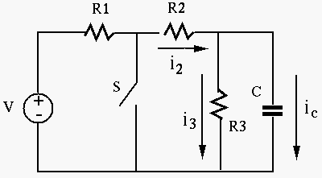
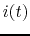

Instructions
In the circuit shown in the figure below,
 ,
,
 ,
,
 , and the input voltage is
, and the input voltage is  V. The switch is closed at
V. The switch is closed at  .
Assume the circuit was at steady state before
.
Assume the circuit was at steady state before  . Find currents
. Find currents  ,
,  and
and  , together with
, together with  as the complete responses of the circuit for
as the complete responses of the circuit for  .
Make sure the signs of these currents are consistent with the assumed directions as
shown in the figure.
.
Make sure the signs of these currents are consistent with the assumed directions as
shown in the figure.

Solution:
Find the current  through the resistor in the circuit shown in the
figure below. Here the voltage source is
 and the current
source is
and the current
source is
 .
.

Solution: